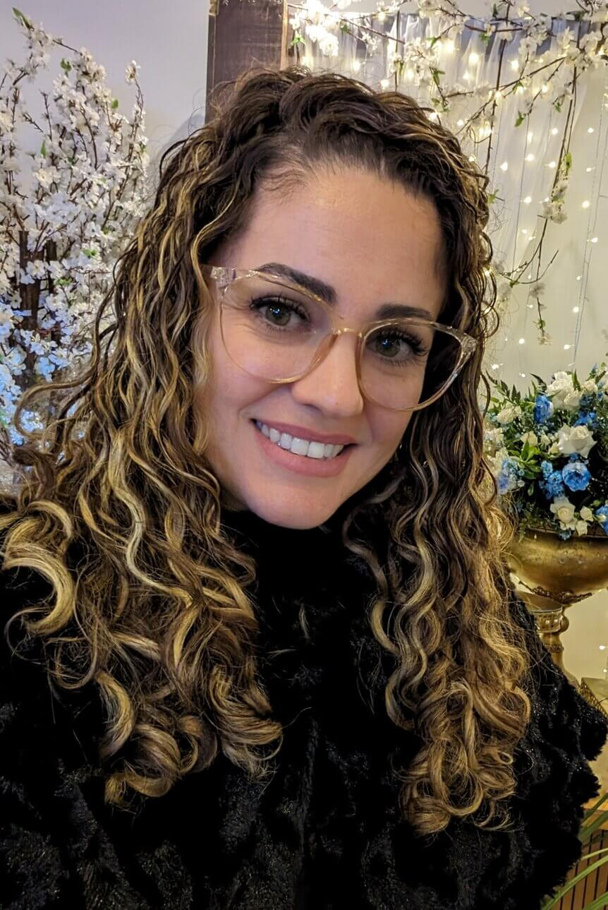

Jenifer Rhenns | WDD 130
Hello, My name is Jenifer Rhenns and I am from Brazil, the State of Santa Catarina, which we kindly call: the holy and beautiful Catarina. We have a lot of beautiful nature, hills, beaches, cold and hot. It is a good place to live. I'm 35 years old, married for 16, and have two sons, Davi is 13, and Noah 9 years old. I like to travel, know new places and people, I love nature and hiking, and I go to the gym too, but only because it's necessary to be healthy, but I don't like it a lot. I like to learn new things and be useful. I like technology and design. I like movies and series too. I work with little kids, but I want to change my career to have more liberty in economic, geographic, and time.